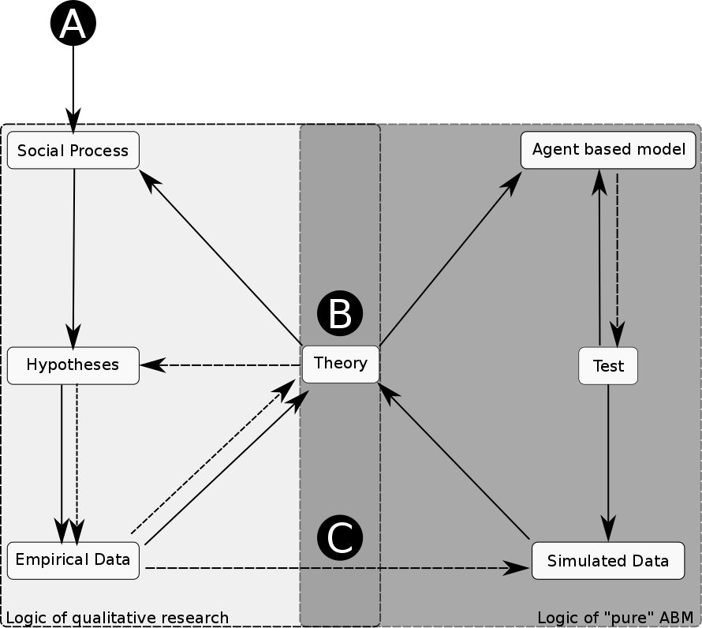

Activité de recherche
Gestion commune de la ressource et gouvernance de l'eau
Chaire “Capital environnemental et gestion durable des cours d'eau” Laboratoire GEOLAB UMR 6042 CNRS Rencontre du 17 Mars 2016 -- Toulouse
Introduction
Point de départ
Deux contraintes théoriques
- Un défi posé aux sciences est de passer de la description de la réalité à l’abstraction qui conduit à la théorisation.
- Les études et travaux sur la gouvernance et/ou la gestion collective de la ressource se heurtent à des problèmes d'incertitude, d'acceptation, de complexité.
Une approche tournée vers la modélisation
Pour dépasser ces contraintes théoriques :
- Utilisation de modèles multi-agents
- Co-construction de modèles (approche participative avec les acteurs de terrain)
- Mobilisation des “sciences post-normales” (Funtowicz et Ravetz. 1993)
Les systèmes multi-agents
SMA : qu'est ce que c'est ?
Un changement de paradigme de modélisation !
Le terme “agents” décrit en général un programme informatique capable d'interagir de manière intelligente avec son environnement
Les systèmes multi-agents (SMA)
“Un agent est une entité physique ou virtuelle
- capable d'agir dans un environnement
- mue par un ensemble de tendances (sous forme d'objectifs)
- capable de percevoir (de manière limitée) son environnement
- dont le comportement tend à satisfaire ses objectifs”
J. Ferber 1995
crédit photo : Y tambe in wikimedia commons{kind=link}
Phylogénétique des pratiques de simulation

D'après Troitzsch 1997
Co-construction et modélisation participative
De l'empirisme dans la modélisation 1/2
Tubaro, P. et A. Casilli (2010).
De l'empirisme dans la modélisation 2/2
Les SMA ouvrent la voie pour les SHS aux construits formels
« formal models are essential to science, not because they are more "true" than other kinds of model, but that they facilitate a collective and progressive development of knowledge between researchers »
Edmonds (2015, §1.2)
Une démarche post-normale ?
« when uncertainties are either of the epistemological or ethical kind, or when decision stakes reflect conflicting purposes among stakeholders »
Funtowic et Ravertz 1993 (p. 750)
Pour faire face à l’inconnu ou à la complexité liée aux comportements humains, les sciences post-normales l'intègrent et la délimitent en utilisant une communauté de pairs.
crédit photo : National Museum of the U.S. Navy on Flick'rLes cas d'étude
Nous cherchons à comprendre quels sont les mécanismes qui sous-tendent la gestion collective de la ressource
Projet GRuE (Gestion REssource)
Dans ce modèle on va tester l'effet, sur un modèle abstrait, de la variation de disponibilité de la ressource.
Un modèle ancré dans le bassin de la Têt (Pyrénées-Orientales), sur la gestion de l'eau dans les ASA (Association Syndicale Autorisé) à l'aval du barrage de Vinça
Projet GRuE : description
Nous sommes sur un modèle à très haut niveau d'abstraction, pour permettre une forte transferabilité
Agents : cellule(s)
Temporalité
- Pas : heure
- Domaine : année
Variables d'état
- Type de culture
- Accès à une ressource
Projet GRuE : Résultats (tmp)
Projet GRuE : Résultats (tmp)
Un modèle à enrichir avec les entretiens dans une démarche co-construite
Enrichie par des entretiens avec les irrigants
- Le barrage → une “bénédiction pour l'agriculture”
- Stabilisation de la ressource dans le temps
- Ouverture sur la modernisation de l'agriculture (irrigation sous pression)
- Le barrage → des effets non pris en compte
- Modernisation → réduction des transferts vers les nappes
- Affaiblissement du lien social entre les irrigants
- Affirmation des collectifs de “haut niveau” (ACAV)
Projet DamAgents
Hypothèse : L'entraide est un facteur d'évolution et la diversité d'acteurs stimule le territoire
Un questionnement issu d'échanges avec E. DOMPS durant le workshop "Floods as Heritage", Limoges 1 et 2 octobre 2015 : Qu'est-ce qu'un partage total de l'information entre les barrages changerait pour les gestionnaires, les populations, et le territoire ?
Projet DamAgents : description
Agents : barrages, population spatialisée et aggrégée (carroyage)
Temporalité :
- Pas : année
- Domaine : 20-30 ans
Variables d'état :
- Type de pratique des barrages
- Type d'échanges d'information (barrage ↔ barrage et/ou barrage ↔ population)
Environnement

Environnement (Zoom)
Projet d'environnement synthétique
Dans l'optique d'explorer les questionnements sur l'indice hydro-social (living river), nous avons commencé à mettre en place un environnement synthétique pour tester la diffusion des pratiques générées par l'indice
Projet d'environnement synthétique
Cela nous permettrait d'explorer :
- L'influence de la labélisation sur le territoire global (relation au niveau communal par exemple)
- Dans une approche constructiviste, aux mécanismes suffisants et nécessaires à une échelle infra pour produire les résultats du reporting par les communes (Upscaling des données)
Projet d'environnement synthétique : exemple
Conclusions
Une réflexion globale sur les collectifs
Les “cas” nous poussent à réfléchir à différentes échelles sur des questions à l'interface sociétés ↔ milieux, et aux phénomènes émergents de processus collectifs appliqué au domaine de l'eau et des barrages.
Merci de votre Attention

Vous pouvez retrouver cette présentation sur GitHub
réalisé avec reveal.js crédit photo : Thomas Misnyovszki on Flick'r